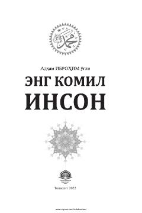

EKPayg'ambarimiz Muhammad alayhissalomning muborak hayotlari va siyratlariga bag'ishlangan kitob.
Ushbu kitobda Payg'ambarimiz Muhammad alayhissalomning muborak hayot yo'llari, tug'ilishlaridan to boqiy dunyoga rihlat qilishlarigacha bo'lgan davr batafsil yoritilgan. Shuningdek, u zotning go'zal axloqlari, siyrat va shamoyillari hamda islom tarixidagi muhim voqealar haqida hikoya qilinadi.